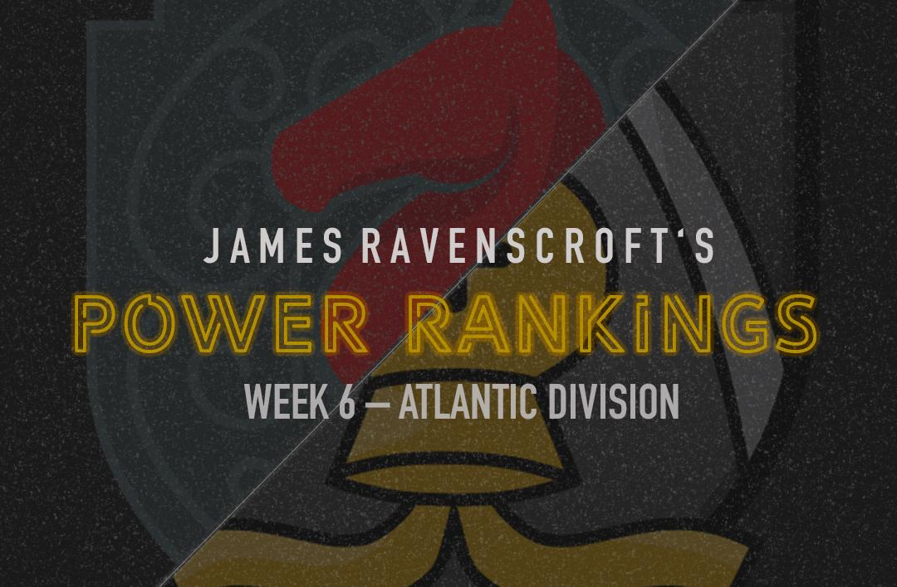

PRO Chess League Power Rankings
Week 6: Atlantic Division

Another week is in the books for the 2019 PRO Chess League. We are finally starting to see some clarity within the division, and as a result, not much moving occurred in these rankings. New York refuses to lose a match and Pittsburgh has found itself on a much-needed mini-streak, while London notched its first W and Miami was left searching for one. Coming up this week is the second of three Battle Royales this season. This is another chance for teams to drastically change their spot in the division since more points are given out in Battle Royale weeks than any other. We're nearing the home stretch of this season, so it's now or never for teams vying for a playoff spot. Players have clearly been blitzing puzzle rush lately, just look at this beautiful find by Saric!
PRO Chess League Overview
This year, we will be doing a weekly power rankings list for teams in the Atlantic division. For those of you who don't know, the regular season of the PRO Chess League (PCL) is ten weeks long. Each week, teams will have to pick 4 players from their roster with an average standard rating (not blitz or rapid) of 2500 FIDE or less for each match. Every match consists of 16 games (aside from the Battle Royales) meaning every player plays 4 games, on rapid time control (15 minutes with a 2-second increment). At the end of the match, the winner of the match receives ten points for the win. Each will also earn as many points as points they earned in the match (i.e. If team A defeats team B 10.5-5.5, team A receives 20.5 points and team B receives 5.5 points). This means that every game matters, so even if a team has already lost, there is still reason to keep playing. If anything that I wrote was unclear, you can always see the
PRO Chess League Official Rules for further explanation. I'm looking forward to seeing the rest of the season, and hope you are too!

Want to support the Black and Gold? Be a part of the Pittsburgh Pawngrabbers' journey in 2019! Check out the Pittsburgh Pawngrabbers on Indiegogo to give your support!
1. Saint Louis Arch Bishops
(PR: 3) Points: 108
This match was a reminder, if you needed one, that the Arch Bishops are still an absolute force in this division. After a bad loss to the Marshalls, the Arch Bishops have gotten their footing back with this rout of the Sopranos. What's more, they may have found a third board that can put up good numbers to go with their already dominant 1,2 punch. Nikolas Theodorou produced 3.5 out of 4 in a match that Saint Louis controlled all the way through. If he can continue to put up 3-or even 2-points a match, then this team will be unstoppable. Even Josh Bloomer managed to score 1.5 out of 4. This team will be hard to beat the rest of the way and can still easily make a run for the title.
2. Montreal Chessbrahs
(PR: 5) Points: 92
I know I said this last week but it just has to be said. How the mighty have fallen! Since the Chessbrahs claimed victory over the Arch Bishops, they seem to have gone on vacation. They haven't done anything since that win. I can't help but think that they need to go back to what was working for them when they were winning. Ivan Saric, Robin van Kampen, and Eric Hansen should be in the lineup with a competent fourth board. That was what was working before. And if that doesn't work, then maybe it's time to break out Super GM Anish Giri. Just a thought.
3. Webster Windmills
(PR: 1) Points: 112.5
That was such an unfortunate loss to the Marshalls, that came with the agony of knowing that a win would've like given them the top spot in the division for the rest of the year. Now they sit a mere point ahead of New York and only 4.5 points ahead of the Arch Bishops. Despite Durarbayli accidentally hanging mate, this loss is probably going to be put on 4th board Josh Grabinsky. I understand that he is a sub-2000 player in a very competitive league, but being able to at least score something would have gotten the Windmills at least a tie. Moving forward, I think that the Windmills will be fine as long as they can keep producing at the top with Robson and Durarbayli, but this loss hurts.
4. New York Marshalls
(PR: 2) Points: 111.5
9,9, 8.5, 8.5, 10.5, 8.5. These are the scores for all of the Marshalls in head-to-head matchups this year. They don't win big, but they do win, which is the most important thing. On that note, what a comeback by the Marshalls! Down 7-5 heading into the fourth round, they trailed 7-5 but produced a 3.5-0.5 round to squeeze out the victory. This is the kind of performance that is the mark of a championship caliber squad. They showed true resilience and were calm in the face of adversity as they rallied to the victory. 2nd board Azarov finished with 3 of out 4, proving to be the difference for the Marshalls. To be honest, I'm not quite sure what makes this team so excellent. They seem to have average talent compared to most teams in the division, but somehow have marched to the top of these rankings, and are close to that first spot in the division.
5. Montclair Sopranos
(PR: 4) Points: 96
I'm keeping the Sopranos in 4th for a third straight week despite a bad loss, simply because of Montreal's loss that was just as bad. I know that the Arch Bishops have 2 the two best players in the U.S. on their team, but nobody scored more than 1.5 points this week. That is a losing formula every time. Aleksandr Lenderman has been the Sopranos best player this year, with 15.5 out of 23 for the season, but was absent in the lineup against the most dangerous team in the league. I'm sure that they wanted to play him and simply couldn't, but no matter what you need to do, your best player needs to find his way into the lineup.
6. Pittsburgh Pawngrabbers
(PR: 6) Points: 71
The Pawngrabbers have been playing great chess in the past 2 weeks. Though they have won against the Lions and the Champions, they have done so in a dominating fashion that inspires confidence moving forward. We saw another good performance by Erenburg ( 3 points) who is proving to be a very valuable signing for the Pawngrabbers. On fourth board, Ed Song produced 3 points too, which was 1.5 points more than any other 4th board this week. If he can continue to put up these numbers then he is going to see lots of playing time. I know this may be a bit dubious, but I think a playoff spot is within reach for the Pawngrabbers. They are only 25 points out with 4 weeks left in the season, and the two teams they need to catch have not been playing well as of late. This season looked like it was slipping away a couple of weeks ago, but the Pawngrabbers have really stepped it up and have a chance to make up some serious ground in the Battle Royale this week.
7. Miami Champions
(PR: 8) Points: 40.5
To my knowledge, this was the first time this year that any one player accounted for more than half of a team's total points for a match. Eduardo Iturrizaga finished with 3.5 out of 4, a number that accounts for 53.8% of this team's points in the match. Unfortunately, that means the rest of the team only scored 3 points, including a 0.5 point effort by 2nd board Rui Gao. I feel bad for Iturrizaga, who has been playing as well as any almost player in the league this year. With 15.5 out of 22, he is an asset to this team, and pretty much the only one they have. The rest of the team has a combined 24 points out of 78 games, a 30.8 win percentage. Ugh. Without Iturrizaga, this team would be hands down the worst in the PRO Chess league, but they might still be even with him.
8. London Lions
(PR: 7) Points: 56.5
The Lions finally secured their first win of the 2019 season, and in a commanding fashion. Tied 4-4 going into the third round, they took control of the match with a 3.5-0.5 round and won the game 9.5-6.5. They seem to have a sense of urgency that wasn't present before, and it starts from the 3.5 out of 4 effort produced by their leading man Edouard. Unfortunately, they need more than one impressive performance to save this season. They are 14.5 points back on Pittsburgh going into the Battle Royale. That kind of ground could be made up, but it will be hard, especially considering how well the Pawngrabbers are playing right now.